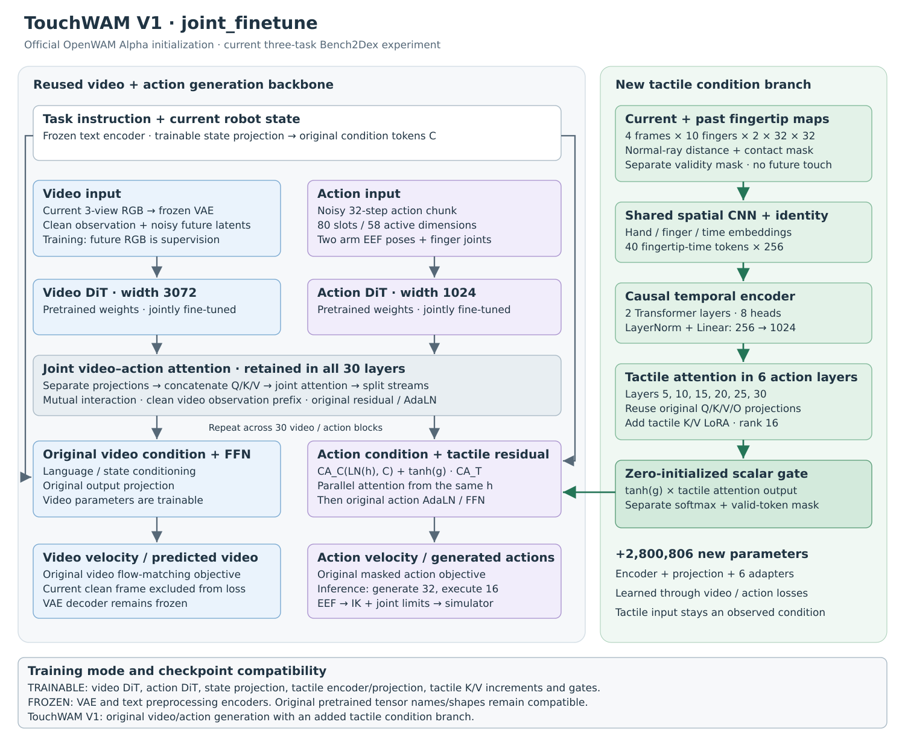

罐头摆盘 · 成功18k
episode 0001 · 34.8 秒
v004 · 2026-10-09 · IIWA7 + Sharpa
Bench2Dex None 配置：不额外施加泛化扰动。每个任务 50 次，共 150 次；三任务均值按全部回合计算。
| 模型 | 来源 | 罐头摆盘（26） | 烤盘准备（32） | 完整拼图（73） | 三任务平均成功率 |
|---|---|---|---|---|---|
| ACT | Bench2Dex 论文 | 34%（17/50） | 18%（9/50） | 0%（0/50） | 17.33% |
| Diffusion Policy | Bench2Dex 论文 | 0%（0/50） | 4%（2/50） | 0%（0/50） | 1.33% |
| π0.5 | Bench2Dex 论文 | 14%（7/50） | 14%（7/50） | 0%（0/50） | 9.33% |
| GR00T N1.5 | Bench2Dex 论文 | 34%（17/50） | 24%（12/50） | 20%（10/50） | 26.00% |
| OpenWAM 11k，无触觉 | 我们复现 | 52%（26/50） | 40%（20/50） | 4%（2/50） | 32.00% |
| TouchWAM 11k | 我们的方法 | 48%（24/50） | 34%（17/50） | 6%（3/50） | 29.33% |
| TouchWAM 18k | 我们的方法 | 44%（22/50） | 46%（23/50） | 10%（5/50） | 33.33% |
训练步数尚未对齐。论文 GR00T N1.5 每个任务单独微调 20,000 次参数更新；我们的 11k / 18k 是 microsteps，对应 5,500 / 9,000 次更新，GR00T 的更新次数约为我们的 2.2–3.6 倍。两者 batch 和任务组织也不同。
目前暂无空闲训练显卡，尚未完成与 GR00T 相同参数更新次数的训练对照。现有结果还不能确定触觉带来了稳定收益。
在 OpenWAM 原有视频—动作双流上，增加一条触觉条件支路：将双手十指的当前及前三帧触觉编码成 token，通过门控注意力注入六个动作层。原主干与触觉模块联合微调，继续使用原来的视频和动作训练目标。

TouchWAM 18k 的真实仿真录像：每个任务各展示一次成功与失败。示例用于观察行为，整体表现以上方 50 回合统计为准。
罐头摆盘 · 成功18k
episode 0001 · 34.8 秒
罐头摆盘 · 失败18k
episode 0002 · 43.6 秒
烤盘准备 · 成功18k
episode 0002 · 30.6 秒
烤盘准备 · 失败18k
episode 0001 · 42.6 秒
完整拼图 · 成功18k
episode 0013 · 45.9 秒
完整拼图 · 失败18k
episode 0001 · 60.7 秒